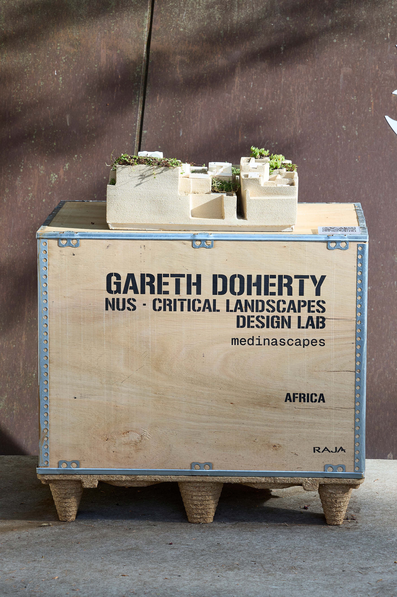
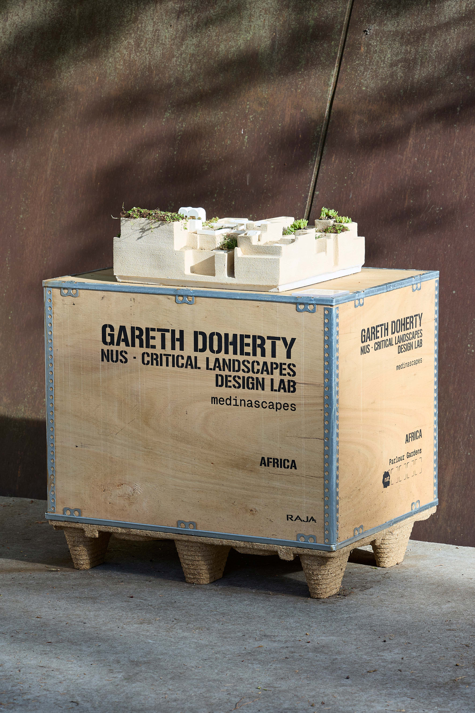
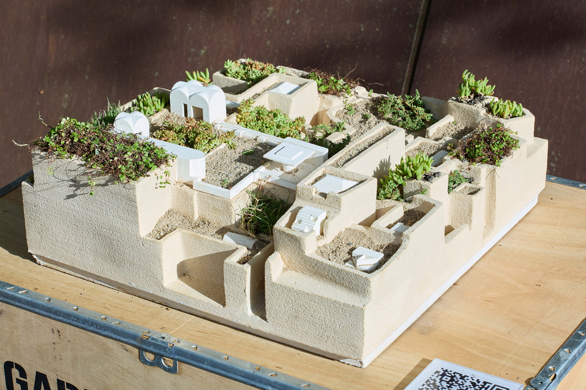
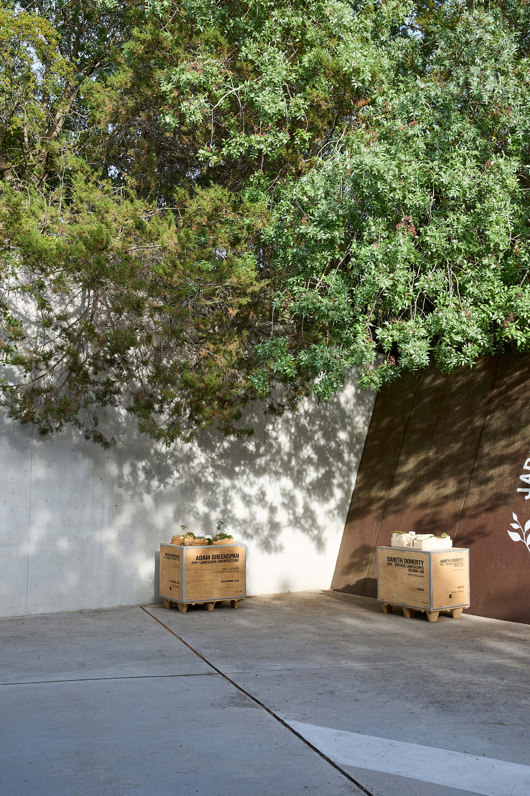
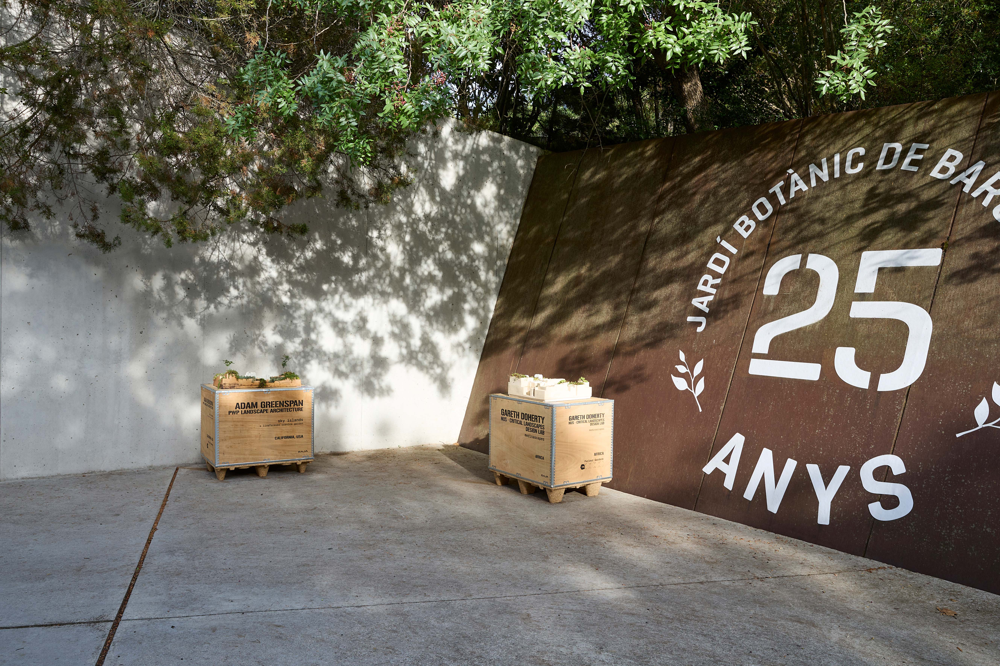
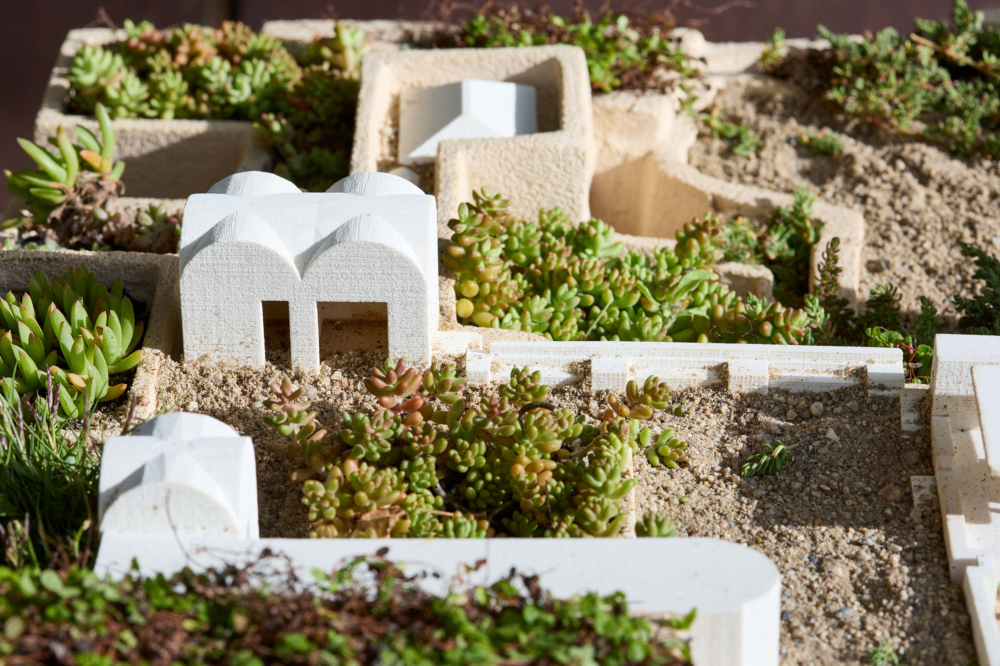

Medinascapes
The Medina of Tunis, dating from the seventh century, consists of a dense network of streets and alleyways punctuated by private courtyards. Above its low-rise fabric, rooftops collectively form a continuous, expansive landscape. Yet despite their proximity to one another, rooftops remain disconnected and underused by the Medina’s varied inhabitants.
Tunis Medinascapes is a provocation to claim the Medina’s rooftops and courtyards as an interconnected landscape. Using the restored Dar Ben Gacem hotel as a prototype, Tunis Medinascapes proposes a network of stairs, ramps, and bridges connecting courtyards and rooftops for humans and non-humans alike, including the Medina’s ubiquitous cats.
The shared spaces become habitats for people, pets, plants and pollinators. Extreme summer heat and winter rains call for layered shelter—through canopy planting and shade structures—alongside systems to collect, store, and move water. Seen from above, the project becomes a mosaic of gardens and shaded spaces that add a new layer to the living landscape of the Medina.





